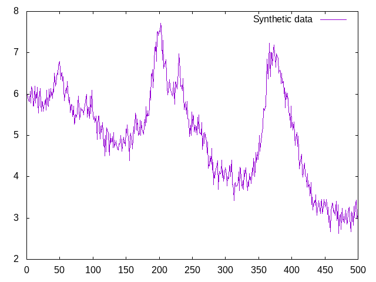
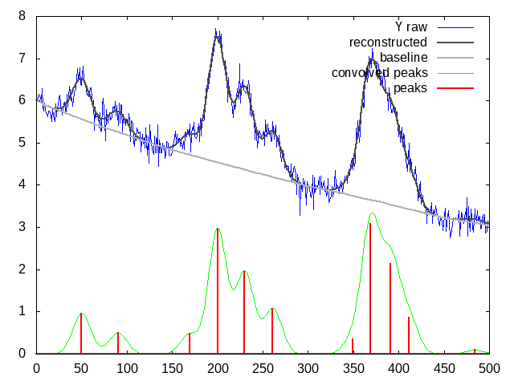
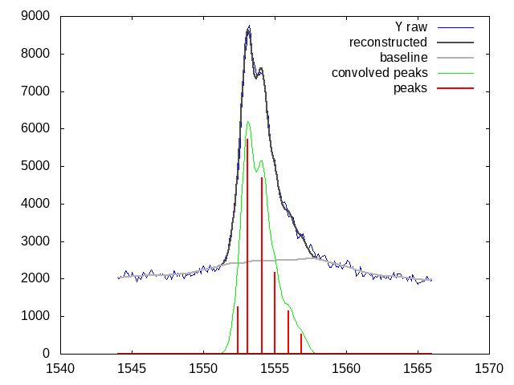
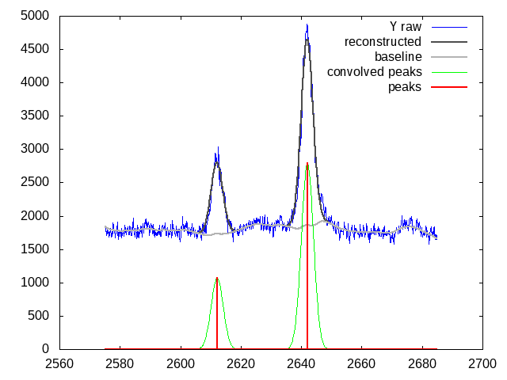
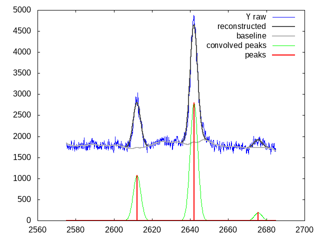
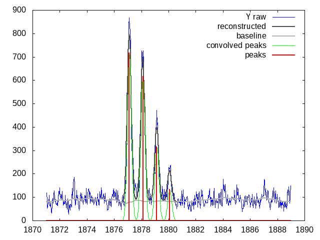
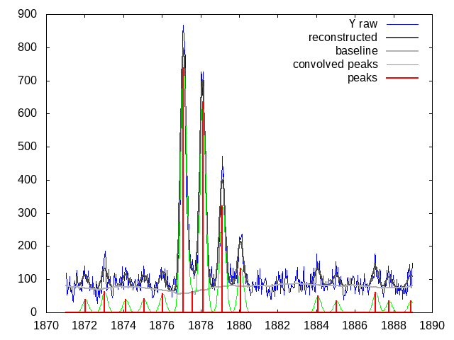
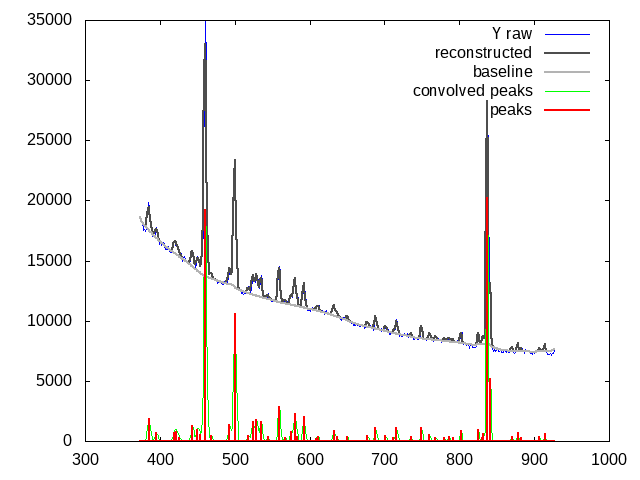

Implementation of a joint baseline removal and deconvolution algorithm
Context
This extra material provides an implementation of the algorithme described in
Linear MALDI-ToF simultaneous spectrum deconvolution and baseline removal, V. Picaud, J-F. Giovannelli, C. Truntzer, J-P. Charrier, A. Giremus 2 , P. Grangeat and C. Mercier, (submitted for publication)
Installation
The C++ code has been tested under Linux.
Dependencies
It depends on the usual Blas and Lapack libraries which are used
for linear algebra operations:
libcblas.solibblas.soliblapacke.soliblapack.so
It embeds (in the ExternalSoftware/ directory) two other libraries:
- https://github.com/ben-strasser/fast-cpp-csv-parser used to read csv files
- https://github.com/jarro2783/cxxopts used to parse the command line options
Build
A Makefile is used to build the demo software:
make
Result
Two executables are generated:
generateSyntheticused to generate the synthetic data used in the article,jointDeconvolutionused to run the algorithm.
Usage Examples
Synthetic data
Data generation
generateSynthetic is used to generate the synthetic data described in the article.
./generateSynthetic --help
Generates some synthetic data
Usage:
./generateSynthetic [OPTION...]
-c, --concavity 1 Baseline concavity, an integer in {-1,0,+1}
-n, --noise 0.2 Noise standard deviation (>0)
--help Print help
For instance
./generateSynthetic --noise 0.2 > Data/synthetic.csv
can be used to generate the Data/synthetic.csv input data. This
synthetic spectrum can be plotted with gnuplot. Launch the gnuplot program
gnuplot
then type
set datafile separator ',' plot "Data/synthetic.csv" u 1:2 w l t "Synthetic data"

Deconvolution
The deconvolution algorithm can be invoked by the jointDeconvolution
command. Its options are listed below:
./jointDeconvolution --help
A joint baseline removal and deconvolution algorithm,
contact vincent.picaud@cea.fr
Usage:
./jointDeconvolution [OPTION...] positional parameters
-i, --input FILE Input file (two columns X,Y)
-o, --output OUTPUT FILE Output file (default: $(FILE).out)
--sigma_left 10 Peak shape factor (>0)
--sigma_right 10 Peak shape factor (>0)
--yb_left y[0] Left baseline value (if not defined use y[0])
--yb_right y[n-1] Right baseline value (if not defined use y[n-1])
--peakMinHeight 0.01 Minimal height to accept peak (>=0)
--lambda_1 0.1 lambda_1 penalty term (>=0)
--lambda_2 1e-05 lambda_2 penalty term (>=0)
--mu 500 mu penalty term (>0)
--eps 0.0001 eps goal (>=0)
--max_iter 5000 maximum number of iterations (>0)
-p, --gnuplot Gnuplot script
--help Print help
The deconvolution results are saved in an output file $(FILE).out where the input file name has been completed by the .out extension.
The -p option also generates the gnuplot script
$(FILE).out.gnuplot that can be invoked to create the associated
plot (in eps or png format).
The default option values can be used to process the synthetic
spectrum, hence simply type (note the -p option to generate the
gnuploy script):
./jointDeconvolution -p ./Data/synthetic.csv
to deconvolve these synthetic data. This must create the ./Data/synthetic.csv.out and ./Data/synthetic.csv.out.gnuplot output files.
As described you can generate the associated plots by:
gnuplot ./Data/synthetic.csv.out.gnuplot
This must create the two files:
- ./Data/synthetic.csv.out.png
- ./Data/synthetic.csv.out.eps

Note: if you want to stay in a gnuplot interactive mode after script
execution, just add a minus sign '-' at the end:
gnuplot ./Data/synthetic.csv.out.gnuplot -
MALDI-ToF spectra
Low resolution
We can test the algorithm on a low resolution MALDI-ToF isotopic motif:
./jointDeconvolution Data/MALDI_ToF_Low_A.csv -p \
--sigma_left 0.4 --sigma_right 0.4 --mu 100
gnuplot ./Data/MALDI_ToF_Low_A.csv.out.gnuplot

This situation is quite extreme, however we can check that extracted peaks (the red impulses) are approximately spaced by \(1\ m/z\) which is the expected result (most of the peaks in MALDI spectra are mono-charged).
We can proceed further by giving an example in the \(2600\ m/z\) mass range:
./jointDeconvolution Data/MALDI_ToF_Low_B.csv -p \
--sigma_left 0.4 --sigma_right 0.5 --lambda_1 0.25
gnuplot ./Data/MALDI_ToF_Low_B.csv.out.gnuplot

There the impulses are also approximately separated by \(1\ m/z\).
However isotopic motif deconvolution without using any extra information (like an expected \(1\ m/z\) spacing between peaks) can lack of robustess. That is the reason why it is certainly safer to use a coarser peak shape modeling the unresolved istopotic motif as a whole. This is illustred by the next figure:
./jointDeconvolution Data/MALDI_ToF_Low_B.csv -o \ Data/MALDI_ToF_Low_B2.csv.out -p --sigma_left 2 \ --sigma_right 2 --lambda_1 1 gnuplot ./Data/MALDI_ToF_Low_B2.csv.out.gnuplot

We can also modify the regulariazation \(\lambda_1\):
./jointDeconvolution Data/MALDI_ToF_Low_B.csv -o \ Data/MALDI_ToF_Low_B3.csv.out -p --sigma_left 2 \ --sigma_right 2 --lambda_1 0.5 gnuplot ./Data/MALDI_ToF_Low_B3.csv.out.gnuplot

High resolution
High resolution MALDI-ToF spectra are easier to deconvolve. Here we modify default parameter values:
- the Gaussian peak shape factor is set to \(0.15\)
- the baseline value at boundaries is set to \(80\)
- the \(\lambda_1\) penalization is set to \(0.5\)
./jointDeconvolution Data/MALDI_ToF_High_A.csv -p \ --sigma_left 0.15 --sigma_right 0.15 --yb_left 80 \ --yb_right 80 --lambda_1 0.5 gnuplot ./Data/MALDI_ToF_High_A.csv.out.gnuplot

We can modify the \(\lambda_1\) value to \(0.2\) to accept more peaks, this gives:

Other type of spectrum
The presented algorithm is generic and can be used for other type of spectra.
Here a $γ$-nuclear spectrum:
./jointDeconvolution --sigma_right 1 --sigma_left 2 \
--mu 100 --lambda_1 0.01 -p Data/Gamma.csv
gnuplot ./Data/Gamma.csv.out.gnuplot
